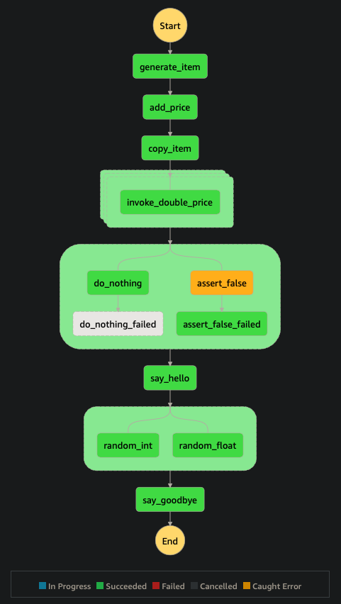
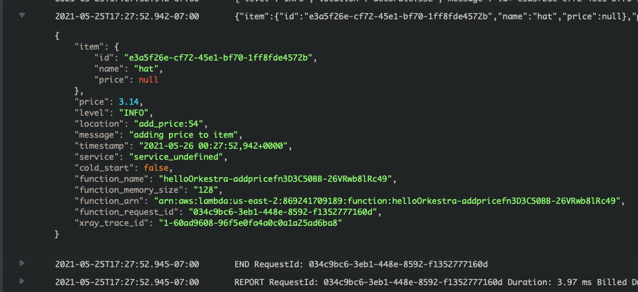

Orkestra#


- deploy lambdas, compose them into workflows, and trigger them on schedule or from cloud events with ease (at a tiny fraction of the cost of Airflow)
- render your diagrams dynamically from code (like Airflow)
- no more wondering about the status of your jobs (and how they broke)
- no more struggling with the operational maintenance of always-on infrastructure to run your jobs
What is Orkestra?#
Orkestra is a lightweight abstraction layer on top of
- AWS Cloud Development Kit (CDK)
- Lambda
- Step Functions
- X-Ray
- Lambda Powertools (optional but recommended)
that provides a seamless way of building observable (scheduled or event-driven) cloud-native workflows.
It aims to bring a similar development experience to that of Airflow while leveraging the full power of AWS.
Features#
- simple intuitive developer experience
- scheduled (ETL) workflows
- event-driven workflows
- simplified local testing
- natively integrated with AWS
- cost-effective
- highly scalable
Example#
1 2 3 4 5 6 7 8 9 10 11 12 13 14 15 16 17 18 19 20 21 22 23 24 25 26 27 28 29 30 31 32 33 34 35 36 37 38 39 40 41 42 43 44 45 46 47 48 49 50 51 52 53 54 55 56 57 58 59 60 61 62 63 64 65 66 67 68 69 70 71 72 73 74 75 76 77 78 79 80 81 82 83 84 85 86 87 88 89 90 91 92 93 94 95 96 97 98 99 100 101 102 103 104 105 106 107 108 109 110 111 112 113 114 115 116 117 118 119 120 | |
1 2 3 4 5 6 7 8 9 10 11 12 13 14 15 16 17 | |
1 2 3 4 5 6 7 8 9 10 11 12 13 14 15 16 17 18 19 20 21 22 23 24 25 26 27 28 29 30 31 32 33 34 35 36 37 38 39 40 41 42 43 44 45 46 47 48 49 50 51 52 53 54 55 56 57 58 59 60 61 62 63 64 65 66 67 68 69 70 71 72 73 74 75 76 77 78 79 80 81 82 83 84 85 86 | |


1 2 3 4 5 6 7 8 9 10 11 12 | |
